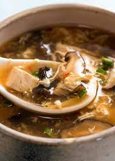

Recipe
Zucchini Fritters
Origin: Unknown
Source: niftyrecipe.com
Category: Side dish/main dish

Zucchini_fritters_1.jpeg
I found this recipe for zucchini fritters on a food blog when I was looking for quick and easy dishes to make during undergrad. It uses minimal ingredients and can be done in less than half an hour. They’re delicious and filling and go great with dipping sauces.
Recipe Ingredients
- Zucchini
- Egg
- Flour
- Vegetable/seed oil
- Garlic
- Salt and pepper
Recipe Steps
- Combine eggs, salt, and pepper and whisk
- Add pressed garlic
- Grate the zucchini and squeeze the moisture out of it
- Add zucchini and flour and mix
- Heat oil in pan and add dollops of batter
- Serve with or without dipping sauce
Additional Food images


Chicken Curry
Origin: Japan
Source: Family Recipe
Category: Main Dish

Japanese Chicken Curry.jpg
Unlike Indian or Thai curry, Japanese curry is more savory than spicy. It’s an exemplary comfort food and one of the most-loved home-cooked dishes in Japan.
Recipe Ingredients
- skinless, boneless chicken breast
- 1 tablespoon olive oil
- 1 pinch salt and ground black pepper
- water
- 1 package curry sauce mix
- 1 can peas
- 5 new potatoes, halved
- 1 package sliced cremini mushrooms
- 2 medium carrots, chopped
- 1 medium onion, chopped
- 2 cups jasmine rice
Recipe Steps
- Place chicken in a large, deep skillet. Drizzle with olive oil and season with salt and pepper on both sides. Add 1/3 cup water to the pan, cover, and cook over medium heat until no longer pink in the center and the juices run clear, about 20 minutes.
- While chicken is cooking, pour 2 cups water into a microwave-safe bowl. Break curry sauce mix into pieces and add to water. Heat in the microwave on high for 3 1/2 minutes; remove and stir until sauce mix has completely dissolved.
- Remove chicken from the skillet. Cut into cubes, return to the skillet, and pour curry sauce over top. Stir in peas, potatoes, mushrooms, carrots, and onion. Bring to a boil, then lower heat and simmer until vegetables are tender, about 30 minutes.
- Meanwhile, bring remaining water and rice to a boil in a saucepan. Reduce heat to medium-low, cover, and simmer until rice is tender and water has been absorbed, 20 to 25 minutes.
- Scoop rice into bowls and serve curry on top.
Additional Food images


Chinese Hot and Sour Soup
Origin: China
Source: tofu, mushrooms, and bamboo shoots
Category: Soup

ChineseHotandSourSoup1.jpeg
Chinese Hot and Sour Soup (酸辣汤) is a popular and flavorful soup known for its spicy and tangy taste. It's made with a variety of ingredients including tofu, mushrooms, and bamboo shoots.
Recipe Ingredients
- Tofu
- Mushrooms
- water
- pork
- bamboo shoots
- soy sauce
Recipe Steps
- Boil
- Simmer
- Cooking
- dipping sauces
Additional Food images
